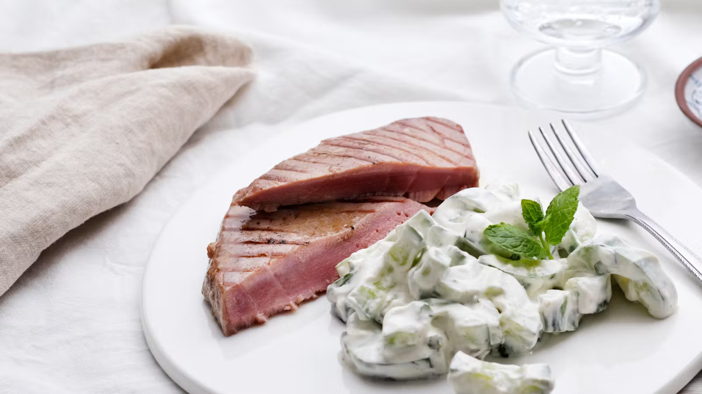

Grilled Tuna with Raita Salad

Description
Tuna—grilled or seared—is perfect when you're in the mood for meat but want something lighter at the same time.
A fresh, crunchy cucumber salad, dressed with delightful Indian flavors, rounds out this simple meal.
Tasty, fun, and ready before you can say, "That was easy!".
Ingredients (Serves 2)
- 325g Fresh Tuna Fillets
- 1 Tablespoon olive oil
- Salt and Pepper
- 325g Cucumber
- 150ml (115g) Greek Yoghurt (4% fat)
- 2 Tablespoons fresh mint
- ½ Teaspoon ground cumin
Directions
- Cut the cucumber lengthwise and spoon out the seeds. Add salt and set aside for a few minutes.
- Dry it off with paper towels and cut into ½ inch (1 cm) slices.
Combine with the rest of the salad ingredients and set aside until serving.
- Cut the tuna into 1" (2.5 cm) steaks. Add salt and pepper to both sides and brush with olive oil.
- Grill or fry over high heat for about 2 minutes on each side, depending on its thickness.
Tuna is best served with a pink center so be careful not to overcook it.
- Serve immediately with the raita salad on the side.
Nutrition Facts (Per Serving)
- 410 Calories
- 19g Fat
- 7g Carbs
- 48g Protein
Back to Top
Back to Homepage